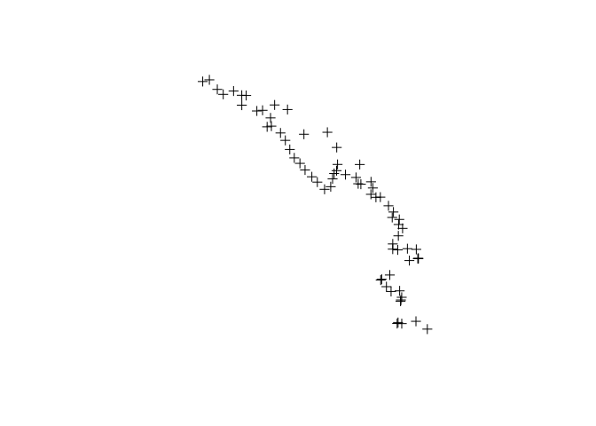
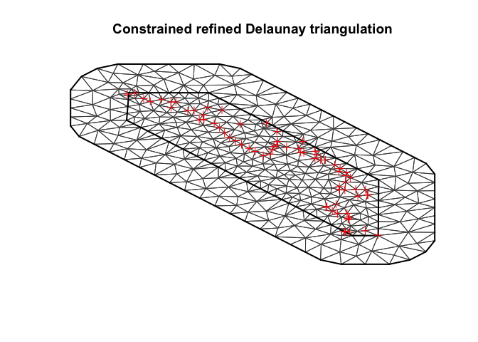
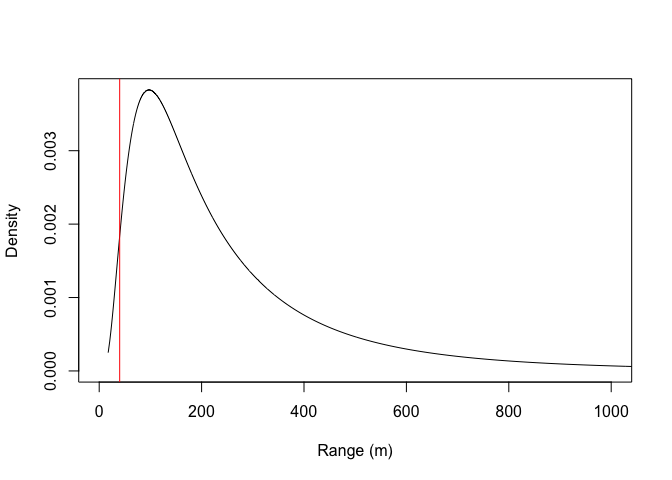
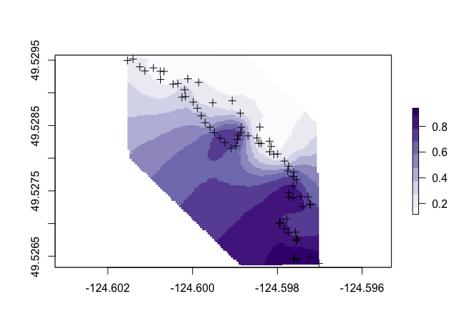

Part 3: Spatial analysis of geotagged data
See the other parts in this series of blog posts.
In parts 1 and 2 we extracted spatial coordinates from our photos and then made an interactive web map that included data associate with those photos. Here I describe how we can build a spatial statistical model to interpolate to unmeasured locations.
Here we will build an interactive map showing model results from an interpolation of oyster presence/absence.
First up we need to load some packages:
library(readr)
library(INLA)
library(sp)
library(raster)
library(rgeos)The INLA package is crucial here. We will be using INLA to perform Bayesian Kriging. In non-technical terms, Bayesian kriging lets us fill in the gaps between observations of oyster counts by interpolating from nearby points.
Getting the data in the right form
Before we begin, we need to load in the data, and transform it into a spatial data frame. In particular, it is important to transform the lon-lats into UTM coordinates. UTM coordinates allow us to measure distances between sample sites in metres:
dat <- read_csv('Oysters_merged.csv')
n <- nrow(dat)
utmproj <- "+proj=utm +zone=10 +north +datum=WGS84 +units=m +no_defs +ellps=WGS84 +towgs84=0,0,0"
spdat <- dat
coordinates(spdat) <- ~ GPSLongitude + GPSLatitude
proj4string(spdat) <- "+init=epsg:4326"
spdf <- spTransform(spdat, CRS(utmproj))
plot(spdf)
You should get a plot like that pictured just of the sample sites.
Creating an INLA “Mesh”
Now we can start building the specialised data-structures we need for the INLA package. First up, we have to build what’s called a mesh. This is a Delaunay triangulation built around our data points. It accounts for the non-regular spatial structuring of the sampling (I wandered around on the rocky shore throwing the quadrat at intervals).
Below we provide two parameters to max.edge, this will enable us to buffer the edges to obtain a slightly larger spatial domain. Buffering is important because the INLA approximation will be inaccurate at the edges of the spatial domain.
max.edge.length <- c(25, 40)
loc1 <- as.matrix(coordinates(spdf))
mesh <- inla.mesh.2d(loc=loc1, max.edge = max.edge.length, offset=1, cutoff = 5)
plot(mesh)
plot(spdf, add = T, col = 'red')
You can play with the edge length, offset and cutoff parameters to vary how the triangulations turns out.
You can get more guidance at the INLA page and in this tutorial. This tutorial also has some very excellent advice about how to choose boundaries and triangle sizes.
An important step is to check that our maximum edge lengths are less than the estimated range (otherwise it is pointless including a spatial effect!). We will check the range size below, once we have fitted the model.
You might like to think of a-prior reasons for modelling a certain range, for instance, what is a reasonable spatial scale for ‘clumping’ of oyster patches?
Build INLA stack
Now we need to implement a few more steps to build up an appropriate ‘stack’ of data for INLA. Note that I have transformed oyster count to presence - absence. We will build a binomial model and just predict whether any given quadrat had oysters or not.
A.data <- inla.spde.make.A(mesh, loc1)
spde <- inla.spde2.matern(mesh, alpha = 2)
spdf$presabs <- ifelse(spdf$oysters_live>0, 1, 0)
stk <- inla.stack(data=list(y=spdf$presabs), A=list(A.data, 1),
effects=list(s=1:mesh$n, intercept=rep(1, n)),
remove.unused = FALSE, tag = "est")Note that here we choose alpha = 2. alpha is a smoothness parameter that must be 0 <= alpha <= 2, higher values will give smoother spatial interpolation. Also note that we have to specify ‘data’ for the intercept (just a vector of 1).
The tag = "est" argument just gives a name tag to the fitted model. In other applications you might want to join the estimation stack with a prediction stack (just build two stacks, one where the response is NA and then join them by applying inla.stack to both).
Model
Now, after that considerable amount of prepartion, we get to fitting the model. We use standard R syntax for the formula, with the addition of the f() term to specify a function.
formula <- y ~ 0 + intercept + f(s, model=spde)
mod <- inla(formula, data=inla.stack.data(stk),
control.predictor=list(A = inla.stack.A(stk)),
family = 'binomial')We can extract summary parameters using summary. Here we are interested in the random effects, it is good practice to call inla.hyperpar before we inspect random effects:
hyper <- inla.hyperpar(mod)
summary(hyper)Checking the range parameter
We should also check that our triangle edge length is less than the estimated spatial range. We can do that by making a call to the model object, asking for the estimated parameters for the random field
rf <- inla.spde.result(inla = mod, name = "s",
spde = spde, do.transf = TRUE)
plot(rf$marginals.range[[1]], type = "l",
xlab = "Range (m)", ylab = "Density",
xlim = c(0, 1000))
abline(v = max.edge.length[2], col = 'red')
The red line shows our edge length parameter, which is well less than the model estimate for the spatial range.
Model predictions
Now we have a fitted model, we can extracted predicted probabilities of oyster presence and map them. First transform the predictions from the logit scale back to probabilities:
ypred <- exp(mod$summary.random$s$mean)/(1 + exp(mod$summary.random$s$mean))Then we can turn our predictions into a spatial points, that can be be mapped onto a raster for plotting:
extent <- extent(spdf)
xdims <- 100; ydims <- 200
xlim <- c(extent[1], extent[2]); ylim = c(extent[3], extent[4]);
proj <- inla.mesh.projector(mesh, xlim = xlim, ylim = ylim, dims=c(xdims, ydims))
field.proj <- inla.mesh.project(proj, ypred)
datpred <- data.frame(x = rep(proj$x, ydims), y = rep(proj$y, each = xdims), pred = as.numeric(field.proj))
coordinates(datpred) <- ~x + y
proj4string(datpred) <- utmproj
dat3 <- spTransform(datpred, crs("+init=epsg:4326"))
r <- raster(extent(dat3), ncols = xdims, nrows= ydims, crs = crs(spdat))
icell <- cellFromXY(r, dat3)
r[icell] <- as.numeric(dat3$pred)And finally the plot:
cols <- RColorBrewer::brewer.pal(9, "Purples")
plot(r, col = cols)
points(spdf)
plot(spdat, add = TRUE)
So it looks like oysters are more common in the southern portion of the survey area.
But note that our predictions extent a fair way from the points. We might want to redo these with a more constrained spatial region. In general we should’t trust predictions that are more than ~ 1 spatial range from the edge of our sampled region (in this case the posterior estimate for range was 181m).
Finally, we could map this onto a satellite image to get a better view of what is going on. I am just using the same leaflet code as before:
library(leaflet)
brks <- seq(0,1, by = 0.1)
ncol <- length(brks)
oystercols <- RColorBrewer::brewer.pal(min(ncol, 9), 'Reds')
pal <- colorBin(oystercols, dat$oysters_live, bins = brks)
x1 <- -124.5997
y1 <- 49.52848
leaflet() %>%
addProviderTiles("Esri.WorldImagery") %>%
setView(lng = x1, lat = y1, zoom = 16) %>%
addRasterImage(r, opacity = 0.8, color = pal) %>%
addCircleMarkers(lng = dat$GPSLongitude, lat = spdat$GPSLatitude,
radius = 4) %>%
addLegend("topright", pal = pal,
values = brks,
title = "Chance of live oysters <a href = 'https://en.wikipedia.org/wiki/Pacific_oyster' target = '_blank'> (Crassostrea gigas)</a>",
opacity = 1)